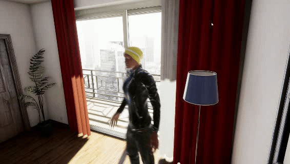
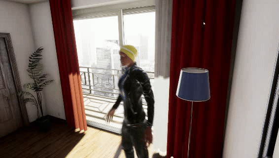

Examples of Virtual Videos
|  |  |
| waving hand | throwing |
 |
|
| saluting | break dancing |
UnrealAction is a dataset that contains the videos generated from embodied agents. Since the generated videos looks largely different from the realworld ones, we term this dataset as "UnrealAction". As shown in the above figure, UnrealAction has 14 actions classes, and each action class has 100 videos from the virtual domainand 10 videos from the realworld domain.
|  | |
| waving hand | throwing |
|
|
| saluting | break dancing |
>> How we create this dataset?
We take advantage of Unreal Engine 4, a popular game engine, to build our simulator. Unreal Engine 4 provides Blueprint, a visual script, to control the virtual world.
>> Dataset Folders
Once you download our dataset from Google Drive or 百度云盘, you will see these sub folders:
The UnrealAction dataset is characterized by its virtual action videos generated by embodied agents, as well as the unique design of atomic actions within the videos. Thus, we suppose it could be useful as a testbed for:
@inproceedings{fu2019embodied,
title={Embodied one-shot video recognition: Learning from actions of a virtual embodied agent},
author={Fu, Yuqian and Wang, Chengrong and Fu, Yanwei and Wang, Yu-Xiong and Bai, Cong and Xue, Xiangyang and Jiang, Yu-Gang},
booktitle={Proceedings of the 27th ACM international conference on multimedia},
pages={411--419},
year={2019}
}